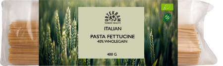

Om Pasta Fettucine
Urtekram pasta fettucine er italiensk fuldkornspasta. Pastaen er fremstillet og produceret af den italienske familie Felicetti, som har lavet pasta siden 1908. Pastaen består udelukkende af 100% durum hvede og lokalt kildevand fra Valle di Fiemme ved bjergkæden Dolomitterne. Pastaen er støbt i bronceforme og derefter tørret af den rene bjergluft. Dette gør pasta fettucine helt unik.
Pastaen er derudover økologisk og fuldkorn.